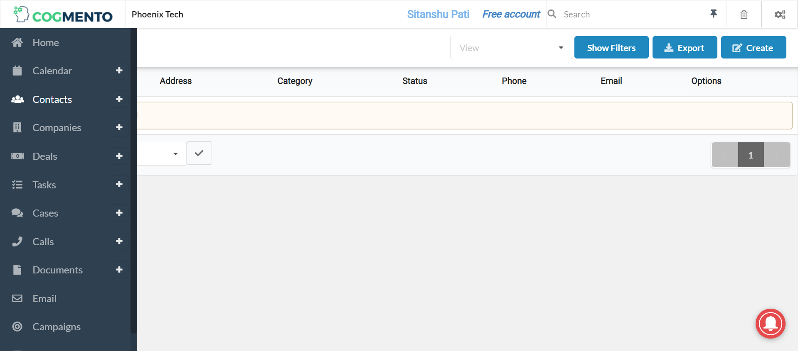

Started
May 21, 2022 04:17:23 PM
Ended
May 21, 2022 04:18:24 PM
Features Passed
0
Features Failed
1
Features
Scenarios
Steps
Timeline
Tags
| Name | Passed | Failed | Skipped | Others | Passed % |
|---|---|---|---|---|---|
| @Examples | 0 | 2 | 0 | 0 | 0% |
System/Environment
| Name | Value |
|---|---|
| build | 1.1 |
| user | Sitanshu |
| AppName | FreeCrm |
| os | Windows |
-
To verify cucumber functionalities
4:17:25 PM / 00:00:58:682 Fail
To verify cucumber functionalities
05.21.2022 4:17:25 PM 05.21.2022 4:18:24 PM 00:00:58:682 · #test-id=1FailTo add a new ContactFailTo add a new ContactGiven User is on Landing PagestepDefinitions.Hooks.stepTearDown(io.cucumber.java.Scenario)imageWhen User clicks on the Login linkstepDefinitions.Hooks.stepTearDown(io.cucumber.java.Scenario)imageThen User should be navigated to Login PagestepDefinitions.Hooks.stepTearDown(io.cucumber.java.Scenario)imageWhen User logs in with username "sitanshupt5.sp@gmail.com" and password "Bapuna10@"stepDefinitions.Hooks.stepTearDown(io.cucumber.java.Scenario)imageThen User should be logged in successfullystepDefinitions.Hooks.stepTearDown(io.cucumber.java.Scenario)imageWhen User opens the contacts pagestepDefinitions.Hooks.stepTearDown(io.cucumber.java.Scenario)imageWhen User clicks on the create button on contacts pagestepDefinitions.Hooks.stepTearDown(io.cucumber.java.Scenario)image Then User is navigated to the create contact pagestepDefinitions.Hooks.stepTearDown(io.cucumber.java.Scenario)imageWhen User adds firstName "subhransu", middleName "sekhar", lastName "nayak", emailType "
Then User is navigated to the create contact pagestepDefinitions.Hooks.stepTearDown(io.cucumber.java.Scenario)imageWhen User adds firstName "subhransu", middleName "sekhar", lastName "nayak", emailType "", emailId " ", category "contact", status "Active", social_handle_type "facebook", social_handle_id "subhransu13@gmail.com", timezone "Asia/Kolkata", street "RBI Colony, Nayapalli", city "Bhubaneswar", province "Odisha", postal_code "751007", address_country "India", phone_type "Mobile", number "7978052018", phone_country "India", birth_day "17", birth_month "February", birth_year "1991", callblock "true", textblock "false", emailblock "false", company "Larsen & Toubro", tagName "friend", supervisor "Snigdha", assistant "", referrer "" Step skippedAnd User click on save buttonStep skipped
-
@Examples
2 tests
@Examples
2 failedStatus Timestamp TestName Fail 16:17:25 PM To add a new Contact To verify cucumber functionalities.To add a new ContactFail 16:17:25 PM To add a new Contact To verify cucumber functionalities.To add a new Contact
-
org.openqa.selenium.TimeoutException
1 tests
org.openqa.selenium.TimeoutException
1 failedStatus Timestamp TestName Fail 16:17:50 PM Then User is navigated to the create contact page To verify cucumber functionalities.To add a new Contact.Then User is navigated to the create contact page